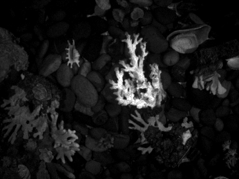

Observe the trajectory
Treat motion-capture references and visual-odometry poses as trajectory observations, with their own observation models and uncertainty.
PLATO learns IMU bias dynamics and uncertainty from accurate trajectory observations. AquaLux brings that question underwater, with repeatable visual outages and multimodal sensor recordings.
A controlled look at underwater visual failure. Real recordings, paired motion patterns, and the sensors to study what happens next.
Ten training sequences have generally reliable visual conditions. Ten test sequences include controlled light-off intervals, while inertial sensing and motion capture continue recording.
Both splits come from the same collection session. The split probes lighting robustness; it does not establish generalization to new sites or devices.
Choose a recording. Rotate its trajectory, inspect its lighting, and scrub through actual recorded sensor data.
Real left-camera frames from Test_001. Light-off labels use mean brightness below 5, merge gaps up to 0.5 s, and retain intervals of at least 1 s.

PLATO: Preintegration-Based Likelihood Maximization from Accurate Trajectory Observations for Neural Inertial Odometry.
Treat motion-capture references and visual-odometry poses as trajectory observations, with their own observation models and uncertainty.
Jointly learn neural ODE bias dynamics and IMU noise statistics through a sparse marginal negative log-likelihood objective.
Use the learned measurement model for inertial preintegration. A double-adjoint training scheme reduces memory use across the nested rollouts.
AquaLux v0.1.0 · Dataset preview
Recordings, reference trajectories, calibration, and light-off annotations.
Per-sequence sensor recordings and a compact reference-data archive. See the release inventory for available files.
DATASET CARDSensor units, coordinate frames, clock conventions, splits, and annotation semantics.
REFERENCE QUALITYQuality masks, calibration exclusions, baseline coverage, and reference limitations.
Released trajectories use sensor timestamps and the IMU body frame. Apply the supplied quality masks and keep continuous segments separate. The recorded clock offset is already applied.
This is a dataset preview. Licensing and contact metadata are pending. Reference trajectories are mocap-derived candidates; physical accuracy and hardware synchronization have not been independently established. Test_005, Test_009 and Test_011 are excluded from default reference evaluation, while their raw recordings remain available.